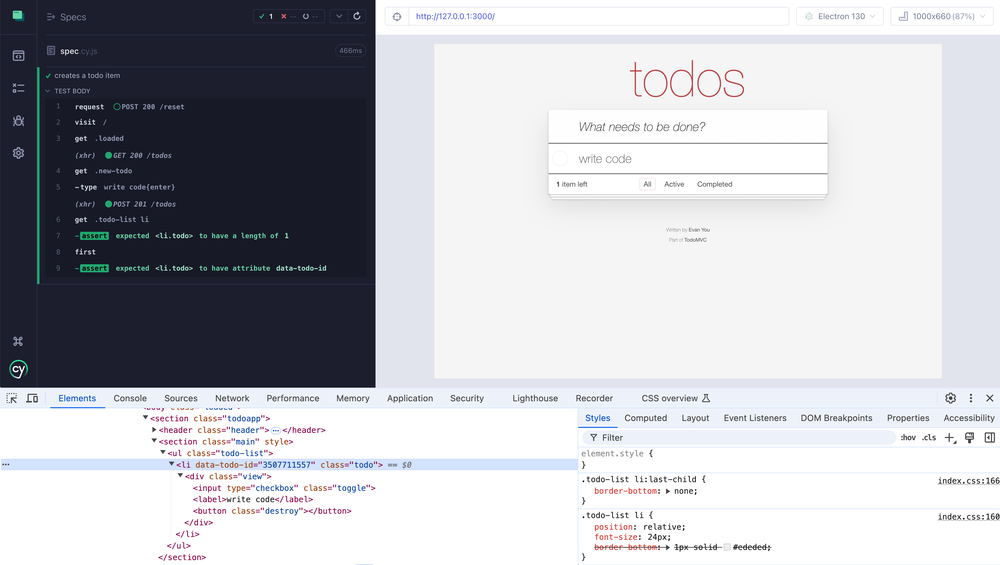
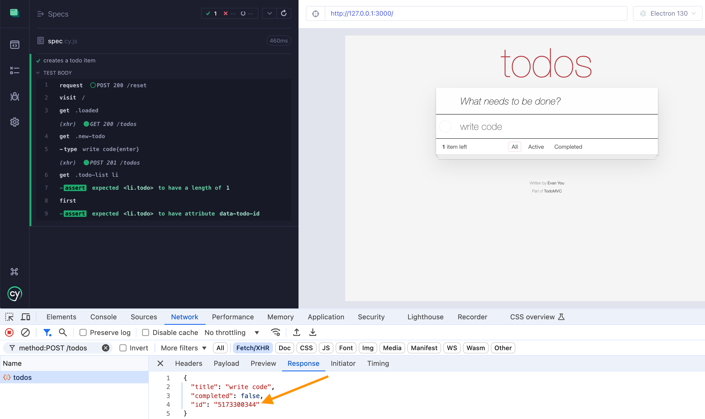
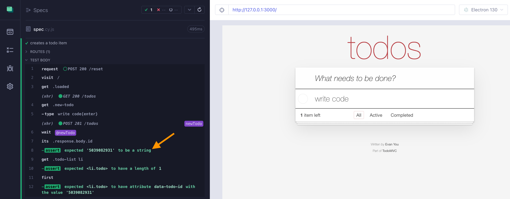
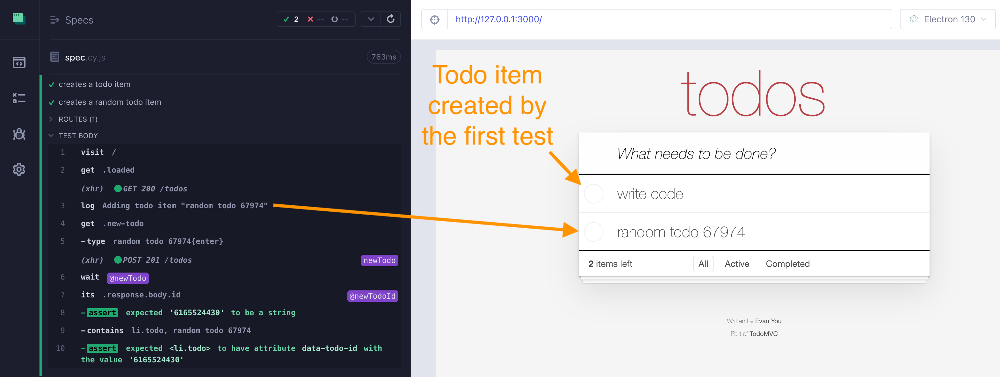
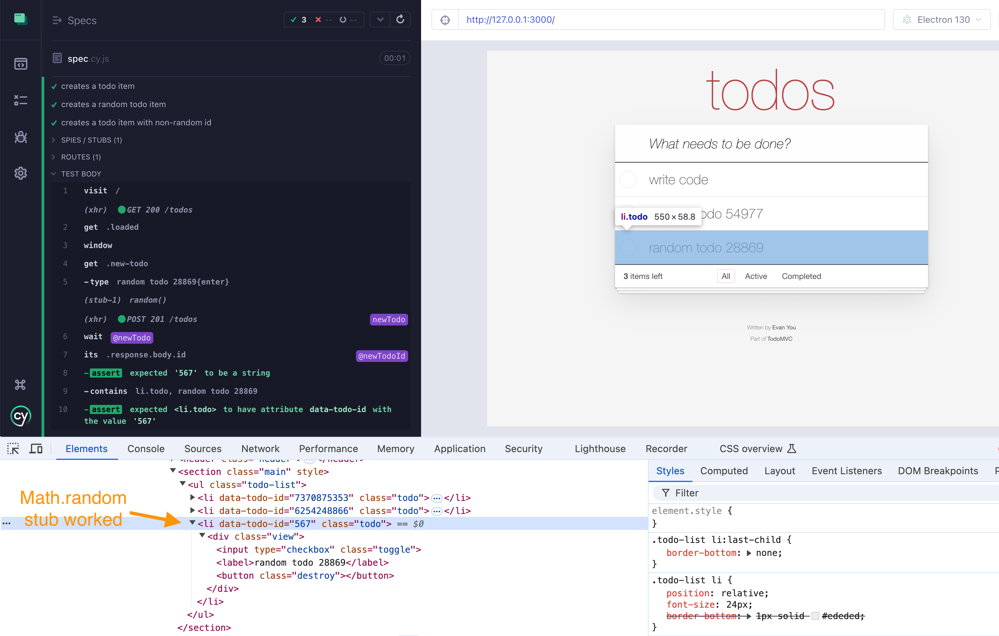

🎁 I wrote this blog post following recording 4 short videos showing how I prefer to write tests that need page objects. Find the videos and the source code in the repo bahmutov/todomvc-callback-example or via my YouTube channel.
Adding todos test
Let's take TodoMVC application. You are testing the most important part of the application: adding todos. The test starts simple, it uses the user interface to confirm the new item appears in the list. The test resets the data before adding its item.
1 | it('creates a todo item', () => { |
Each new item gets its own unique id, and this unique attribute is exposed in the HTML as data-todo-id string.

📺 You can watch me using test-driven development when adding the
data-todo-idattribute in the video TDD Example: Add data- Attribute.
Great, but once we are writing more tests (completing todos, deleting items, item filters), we would need to do the same steps from other specs. I see roughly 4 reusable steps in the test above:
1 | it('creates a todo item', () => { |
Page object
If we know that we will reuse certain testing commands from different specs, we can move this logic into a page object utility. Here is my
1 | export const TodoMVCPage = { |
A couple of points about the page objects the way I write them:
- page objects are named exports
- they are simple static objects without any internal logic or data encapsulation
- I use either TypeScript or JSDoc comments to describe the methods and provide type checking
The test then simply calls the page object methods before checking the item
1 | import { TodoMVCPage } from './todomvc.page' |
You can watch the refactoring in the video below
Get the created item's id
Our test simply checks if the item element has the data attribute. It does not check its value, since we do not know the new random test id. Let's verify the attribute by passing the item's id back to the testing code. We know the application is creating the id in its frontend code and then sends it to the backend.
The backend responds with the same item, so we could grab it from the network call

1 | addTodo(title) { |
We can easily grab the id value from the intercepted network call, but how do we pass it back to the test? Cypress code is declarative and asynchronous, but it does not use promises, since promises are limited to be a single execution. Thus you do not return a value from Cypress commands.
1 | // 🚨 DOES NOT WORK |
Instead, we need to pass the value we get from the application forward.
Using a callback
One approach people use in Cypress tests mimics the asynchronous Node.js programming from about 10 years ago: using callbacks. I have a few blog posts about Node callbacks, for example Put callback first for elegance. Our test could pass a callback with more testing commands:
1 | // the page object code |
Tip: I like adding sanity assertions like .should('be.a', 'string') to catch obvious errors plus to print the value in the Cypress Command Log.

Ok, not bad, but using a lot of callbacks quickly becomes hard to code and hard to debug.
From callbacks to Cypress chain
Node.js has migrated from using callbacks to attaching these callbacks to a Promise instance.
1 | // using callbacks |
We can do the same by returning a Cypress chain object (which is returned by every Cypress command). Our page object method simply returns the last command, including all its assertions
1 | // the page object code |
The spec instead of passing a callback, simply passes it to the Cypress cy.then command:
1 | // the spec code |
Note: I always thought that cy.then command should have been called cy.later to avoid the name clash with the Promise syntax.
Using an alias
Returning a Cypress commands lets us easily work with the last subject value produced by the Cypress commands inside the page object method TodoPage.addTodo. But what if we want to produce several values? We can use Cypress aliases.
1 | // the page object code |
The test code can simply decide what is the alias name to use.
1 | // the spec code |
Notice the separation between calling the page object and using the aliased value
1 | TodoPage.addTodo('write code', 'newTodoId') |
You can watch the transformation from callbacks to Cypress aliases in the video below
Save an object under an alias
Saving just a single item's id under an alias might not be enough for our needs. Imagine that we cannot clear the backend's database before creating a single todo item. We need to create an item that does not clash with any previously created items. The item should be simple to find; it calls for a random title text.
We can form a random string using the included Lodash library method:
1 | const title = `random todo ${Cypress._.random(1e4, 1e5)}` |
But how do we return both the title and the item's id together? The easiest case is to form the object that we want to return and yield back from the page object method.
1 | /** |
The page object method addTodo yields the id. We grab the title string and form the object to be returned from the cy.then callback
1 | const title = `random todo ${Cypress._.random(1e4, 1e5)}` |
Any defined value returned by the cy.then callback becomes the new subject. The spec code can destructure the object for example:
1 | it('creates a random todo item', () => { |

If you want to watch this refactoring, check out the video below
Control the data
Finally, we can avoid the entire "async / await is missing in Cypress" (even if you could hack it yourself) problem. The problem comes from your test needing to "get" the data from the application because it does not "know" it. As my previous video Good Cypress Test Syntax showed: if you can control the test data and avoid non-deterministic values, then your test should know precisely the item's text and id. The test becomes really simple.
Our application is creating todo objects and assigning id using the following frontend code
1 | function randomId() { |
The code line return Math.random().toString().substr(2, 10) creates the unknown data. We can control it from the Cypress test though. Let's stub the global method Math.random from our test.
1 | it('creates a todo item with non-random id', () => { |
The original Math.random function returns a floating point number between 0 and 1, like 0.237891... We stub this method to return the same number every time it is called. Since we are only creating a single todo item, this stub works just fine. The stub will return 0.567, which the randomId function converts into the id value 567. The test "knows" the id to expect, since it control it, and asserts it is present in the DOM.

No more randomness, the test knows precisely what to expect, and thus does not need to get anything from the application. No more cy.then and no more aliases. Simple, declarative programming. If you want to watch how I stub Math.random, watch the video below